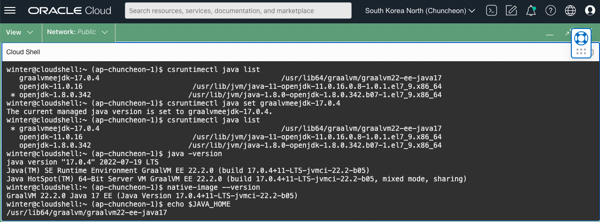

CloudShell now offers GraalVM Enterprise JDK 17 and Native Image
- Release Notes - CloudShell now offers GraalVM Enterprise JDK 17 and Native Image
- Blog - Announcing GraalVM Enterprise in OCI Code Editor and Cloud Shell
업데이트 사항
다른 글에서 언급한 것 처럼 OCI에서는 Java SE 및 GraalVM 사용에 대한 권한을 제공합니다. OCI 상에서 실행되는 Java에 대한 기술지원을 받을 수 있으면, GraalVM Enterprise로 사용할 수 있습니다.
이제 CloudShell에서 GraalVM Enterprise JDK 17을 기본 설치제공하여, CloudShell에서 바로 사용할 수 있습니다.
-
Cloud Shell에 접속해서 보면, 아래와 같이 기본적으로 OpenJDK 1.8을 사용하고 있습니다.
-
다음 명령을 통해 현재 설치된 JDK 목록을 확인할 수 있습니다.
csruntimectl java list -
현재 기준 아래와 같이 JDK가 3가지가 설치되어 있습니다.
winter@cloudshell:~ (ap-chuncheon-1)$ csruntimectl java list graalvmeejdk-17.0.4 /usr/lib64/graalvm/graalvm22-ee-java17 openjdk-11.0.16 /usr/lib/jvm/java-11-openjdk-11.0.16.0.8-1.0.1.el7_9.x86_64 * openjdk-1.8.0.342 /usr/lib/jvm/java-1.8.0-openjdk-1.8.0.342.b07-1.el7_9.x86_64 -
사용할 JDK를 GraalVM Enterprise JDK 17로 변경합니다.
csruntimectl java set graalvmeejdk-17.0.4 -
변경되면 아래 명령으로 자바 버전과, Native Image CLI의 버전을 확인합니다.
java -version native-image --version -
실행 결과 예시

이 글은 개인으로서, 개인의 시간을 할애하여 작성된 글입니다. 글의 내용에 오류가 있을 수 있으며, 글 속의 의견은 개인적인 의견입니다.